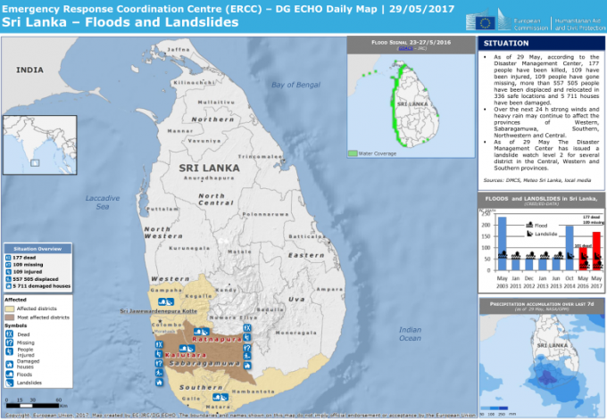
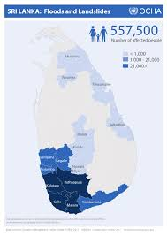

A disaster map is a Map that highlights areas that are affected by or vulnerable trticular hazard. They are typically created for natural hazards, such as earthquakes, volcanoes, landslides, flooding and tsunamis. Disaster maps help prevent serious damage and deaths.
What is Disaster Map
Posted on 11 sep 2018 by Admin | Filed under templates, internet Comments 11

Natural Disaster Risks in Sri Lanka
Posted on 29 aug 2016 by Admin | Filed under templates, internet Comments 7
